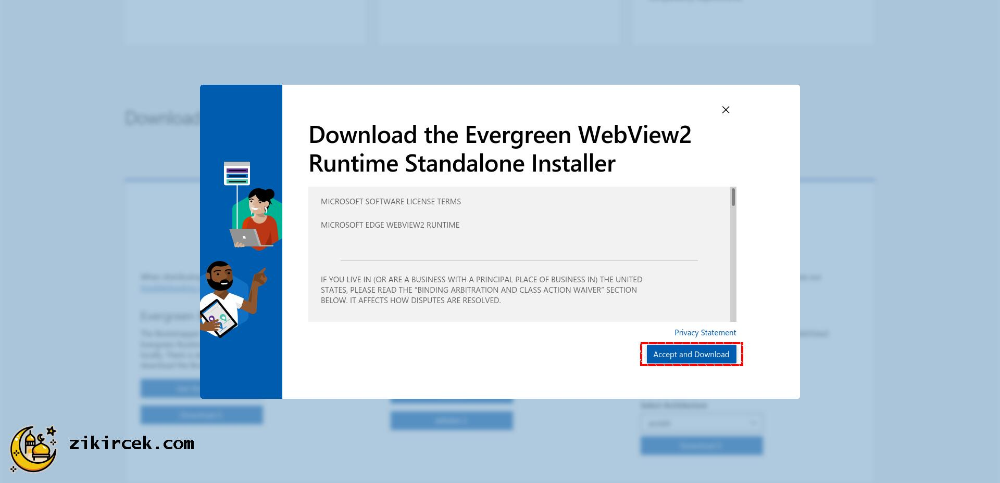
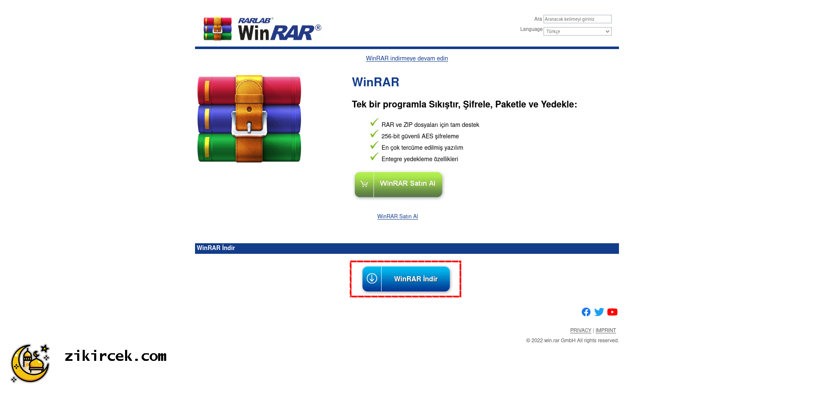

Çekilen zikir sayısını
sıfırlamak istediğinize emin
misiniz?
Bilgilendirme: Aşağıdaki kutucuklara
tıklayarak detayları görebilirsiniz.
Esmaül hüsna Yüce ALLAH'ın en
güzel isimleri için kullanılan bir tabirdir.
Allah'ın 99 ismi vardır. Kim bunları
ezberlerse (iman eder ve ezbere
sayarsa) Cennete girer.
( Hadis-i Şerif )
Yüce ALLAH'ın her isminin
kendine has bir fazileti bulunmaktadır. Büyük
alimler
tarafından belirlenen günlük çekilmesi gereken
zikir
sayısı kadar zikir çekildiğinde bu faziletler
etkisini
gösterebilir.
Zikir çekmek alemlerin rabbi
yüce ALLAH'ı anmak ve
şükretmek demektir. Rabbimizin bizlere
bahşettiği
sayısız nimete olan şükrümüzü göstermek için
zikir
çekeriz.
Onlar, inananlar ve kalpleri Allah’ı
anmakla
huzura kavuşanlardır. Biliniz
ki, kalpler ancak
Allah’ı anmakla huzur bulur.
( 13 / Ra'd 28 )
Onlar ayaktayken, otururken ve
yanları üzerine
yatarken Allah’ı anarlar.
Göklerin ve yerin
yaratılışı üzerinde düşünürler.
“Rabbimiz! Bunu
boş yere yaratmadın, seni
eksikliklerden uzak
tutarız. Bizi ateş azabından
koru”
derler.
( 3 / Âl-i İmran 191 )
Rabbini, içinden yalvararak ve
korkarak, yüksek
olmayan bir sesle sabah-akşam
zikret ve
gafillerden olma.
( 7 / A'râf 205 )
Onlar, inananlar ve kalpleri Allah’ı
anmakla
huzura kavuşanlardır. Biliniz
ki, kalpler ancak
Allah’ı anmakla huzur bulur.
( 13 / Ra'd 28 )
Onlar, Allah anıldığı zaman kalpleri
ürperen,
başlarına gelen musibetlere
sabreden, namazı
dosdoğru kılan ve kendilerine
rızık olarak
verdiklerimizden Allah yolunda
harcayan
kimselerdir.
( 22 / Hac 35 )
Andolsun, Allah’ın Resûlünde sizin
için; Allah’a
ve ahiret gününe kavuşmayı uman,
Allah’ı çok
zikreden kimseler için güzel bir
örnek
vardır.
( 33 / Ahzâb 21 )
Şüphesiz müslüman erkeklerle müslüman
kadınlar,
mü’min erkeklerle mü’min
kadınlar, itaatkâr
erkeklerle itaatkâr kadınlar,
doğru erkeklerle
doğru kadınlar, sabreden
erkeklerle sabreden
kadınlar, Allah’a derinden saygı
duyan erkekler,
Allah’a derinden saygı duyan
kadınlar, sadaka
veren erkeklerle sadaka veren
kadınlar, oruç
tutan erkeklerle oruç tutan
kadınlar,
namuslarını koruyan erkeklerle
namuslarını
koruyan kadınlar, Allah’ı çokça
anan erkeklerle
çokça anan kadınlar var ya, işte
onlar için
Allah bağışlanma ve büyük bir
mükâfat
hazırlamıştır.
( 33 / Ahzâb 35 )
Ey iman edenler! Allah’ı çokça
zikredin.
( 33 / Ahzâb 41 )
O’nu sabah akşam tespih edin.
( 33 / Ahzâb 42 )
Namaz kılınınca artık yeryüzüne
dağılın ve Allah’ın lütfundan
nasibinizi arayın. Allah’ı çok
zikredin ki kurtuluşa eresiniz.
( 62 / Cuma 10 )
Zikir Çekme Uygulamamızı
Ücretsiz İndirin
Bilgilendirme
Telefondan veya
tabletten
kullanan
kardeşlerimiz tabloyu sağa kaydırarak tablonun devamını görebilirler.
Debian kurulumunda uygulamamızı çalıştırabilmek için çalıştırma yetkisi
gerekmektedir.
Windows kurulumunda ise kurmadan önce gerekli yazılımların yüklü olması
gerekmektedir.
Bu yüzden uygulamamızı kurmadan önce aşağı kaydırarak kurulum
aşamalarını takip ediniz.
Android
Debian
Windows
Kısayol
Çok Yakında !
Windows Kurulumu (Çok Kolay)
Uygulamamızı windows işletim sistemi yüklü cihazınıza kurmadan önce
WebView2 isimli yazılımın cihazınızda kurulu olması gerekmektedir.
WebView2 kurulu olarak gelmediğinden dolayı bu yazılımı kurmak için
aşağıdaki adımları takip ediniz.
2. Daha sonra açılan pencereden sözleşmeyi onaylamak ve kurulum
dosyasını indirmek için "Accept and Download" isimli kutucuğa tıklayınız
ve indirme
işlemi tamamlandıktan sonra kurulumu "ileri" kutucuklarına tıklayarak
yazılımı
kurunuz.

3. Daha sonra WinRAR kurulum dosyasını indirmek için https://www.win-rar.com/start.html?&L=5
adresine gelerek "WinRAR indir" kutucuğuna tıklayınız ve indirme işlemi
tamamlandıktan sonra kurulumu "ileri" kutucuklarına tıklayarak yazılımı
kurunuz.

4. Sitemiz gelerek windows uygulamamızı indirin ve indirilen
uygulamamızı WinRAR ile açarak açılan klasörü masaüstünüze atınız ve
masaüstüne attığınız klasörü açınız ve "zikircek" programına tıklayınız.
Tebrikler kurulumu başarıyla tamamladınız.
Masaüstünüze attığınız klasörün içindeki "zikircek" isimli programa
tıklayarak uygulamayı çalıştırabilirsiniz.
Debian Kurulumu (Çok Kolay)
1. Sitemiz üzerinden debian uygulamamızı indirin ve indirme işlemi
tamamlandıktan terminalden cd komutu ile uygulamamızın olduğu dizine
geliniz.
Örnek: cd Downloads/
2. Programın çalışabilmesi için çalıştırma yetkisi vermek için aşağıdaki
kodu giriniz.
chmod 001 "Zikir Çek.out"
Tebrikler kurulumu başarıyla tamamladınız.
Grafiksel arayüzden uygulamanın yüklü olduğu dizine gelerek ve uygulama
çift tıklayarak uygulamayı çalıştırabilirsiniz.
Kısayol Kurulumu (Çok Kolay)
1. Sitemizden kısayolu indiriniz.
İndirme işlemi tamamlandıktan sonra indirilen dosyaya çift tıklayarak
kısayolu kullanabilirsiniz.
Favori Zikirlerim
#
Allah'ın 99
ismi
Açıklama
Çekilmesi gereken sayı
Favoriler
Zikir Tablosu
Bilgilendirme Telefondan veya
tabletten
kullanan
kardeşlerimiz tabloyu sağa kaydırarak tablonun devamını görebilirler.
#
Allah'ın 99
ismi
Açıklama
Çekilmesi gereken sayı
Favoriler
1
ALLAH (
يَا الله )
Her ismin
vasfını ihtiva eden öz adı. Kendinden
başka ilah bulunmayan tek Allah. Bu
ism-i şerif, Cenâb-ı Hakk'ın has
ismidir. Bu itibarla diğer isimlerin
ifade ettiği bütün güzel vasıfları ve
İlâhî sıfatları içine alır. Diğer
isimler ise, yalnız kendi mânalarına
delâlet ederler. Bu bakımdan Allah
isminin yerini hiçbir isim tutamaz. Bu
isim, Allah'tan başkasına mecazen de
verilemez. Diğer isimlerinden
bazılarının, Allah'tan başkasına isim
olarak verilmesi caizdir.
66/66
2
ER-RAHMÂN (
اَلرَّحْمَنُ )
Dünyada bütün
mahlûkata merhamet eden, şefkat
gösteren, ihsan eden.
0/298
3
ER-RAHÎM (
اَلرَّحِيمُ )
Ahirette,
sadece müminlere acıyan, merhamet eden.
0/258
4
EL-MELİK (
اَلمَلِكُ )
Mülkün,
kâinatın sahibi, mülk ve saltanatı
devamlı olan.
0/91
5
EL-KUDDÛS (
اَلقدُّوسُ )
Her
noksanlıktan uzak ve her türlü takdîse
lâyık olan.
0/170
6
ES-SELÂM (
اَلسَّلَامُ )
Her türlü
tehlikelerden selamete çıkaran.
Cennetteki bahtiyar kullarına selâm
eden.
0/131
7
EL-MÜ’MİN (
اَلمُؤْمِنُ )
Güven veren,
emin kılan, koruyan, iman nurunu veren.
0/137
8
EL-MÜHEYMİN (
اَلمُهَيْمِنُ )
Her şeyi görüp
gözeten, her varlığın yaptıklarından
haberdar olan.
0/145
9
EL-AZÎZ (
ااَلعَزِيزُ )
İzzet sahibi,
her şeye galip olan, karşı gelinemeyen.
0/94
10
EL-CEBBÂR (
اَلجبَّارُ )
Azamet ve
kudret sahibi. Dilediğini yapan ve
yaptıran. Hükmüne karşı gelinemeyen.
0/206
11
EL-MÜTEKEBBİR (
اَلمُتَكَبِّر )
Büyüklükte
eşi, benzeri yok.
0/662
12
EL-HÂLİK (
اَلخَالِقُ )
Yaratan,
yoktan var eden. Varlıkların geçireceği
halleri takdir eden.
0/731
13
EL-BÂRİ (
اَلبَارِئُ )
Her şeyi
kusursuz ve mütenasip yaratan.
0/214
14
EL-MUSAVVİR (
اَلمُصَوِّرُ )
Varlıklara
şekil veren ve onları birbirinden farklı
özellikte yaratan.
0/336
15
EL-GAFFÂR (
اَلغَفَّارُ )
Günahları
örten ve çok mağfiret eden. Dilediğini
günah işlemekten koruyan.
0/1281
16
EL-KAHHÂR (
اَلقَهَّارُ )
Her
istediğini yapacak güçte olan, galip ve
hâkim.
0/306
17
EL-VEHHÂB (
اَلوَهَّابُ )
Karşılıksız
nimetler veren, çok fazla ihsan eden.
0/196
18
ER-REZZÂK (
اَلرَّزَّاقُ )
Her varlığın
rızkını veren ve ihtiyacını karşılayan.
0/308
19
EL-FETTÂH (
اَلفَتَّاحُ )
Her türlü
sıkıntıları gideren.
0/489
20
EL-ALÎM (
اَلعَلِيمُ )
Gizli açık,
geçmiş, gelecek, her şeyi, ezeli ve
ebedi ilmi ile en mükemmel bilen.
0/150
21
EL-KÂBİZ (
اَلقَابِضُ )
Dilediğinin
rızkını daraltan, ruhları alan.
0/903
22
EL-BÂSİT (
اَلبَاسِطُ )
Dilediğinin
rızkını genişleten, ruhları veren.
0/72
23
EL-HÂFİD (
اَلخَافِضُ )
Kâfir ve
facirleri alçaltan.
0/1481
24
ER-RÂFİ (
اَلرَّافِعُ )
Şeref verip
yükselten.
0/351
25
EL-MUİZZ (
اَلمُعِزُّ )
Dilediğini
aziz eden.
0/117
26
EL-MÜZİLL (
اَلمُذِلُّ )
Dilediğini
zillete düşüren, hor ve hakir eden.
0/770
27
ES-SEMÎ (
اَلسَّمِيعُ )
Her şeyi en
iyi işiten, duaları kabul eden.
0/180
28
EL-BASÎR (
اَلبَصِيرُ )
Gizli açık,
her şeyi en iyi gören.
0/112
29
EL-HAKEM (
اَلحَكَمُ )
Mutlak hakim,
hakkı bâtıldan ayıran. Hikmet sahibi.
0/68
30
EL-ADL (
اَلعَدْلُ )
Mutlak adil,
yerli yerinde yapan.
0/104
31
EL-LATÎF (
اَلَّلطِيفُ )
Her şeye
vakıf, lütuf ve ihsan sahibi olan.
0/129
32
EL-HABÎR (
اَلخَبِيرُ )
Her şeyden
haberdar. Her şeyin gizli taraflarından
haberi olan.